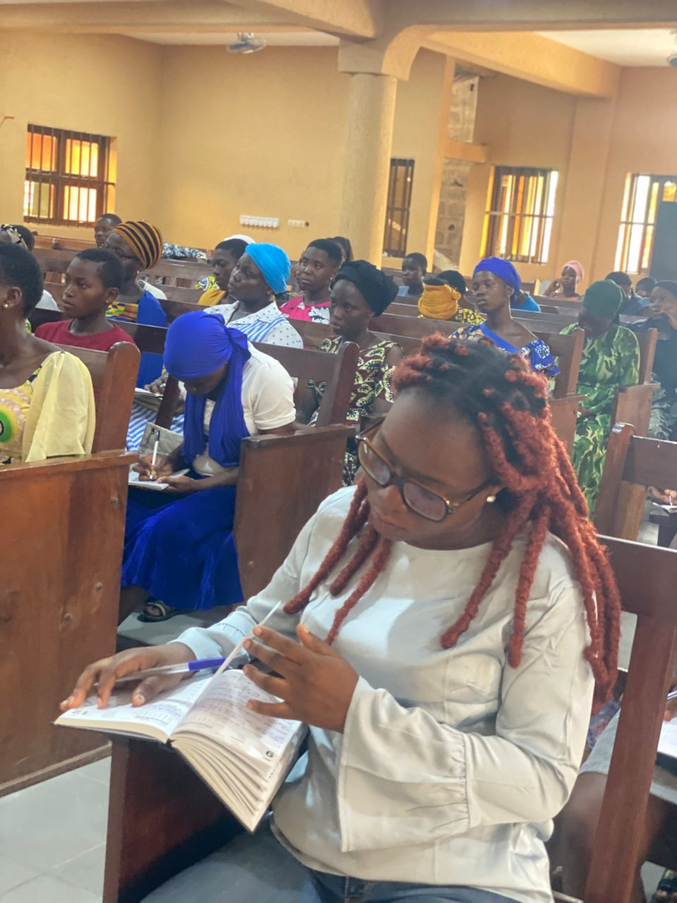
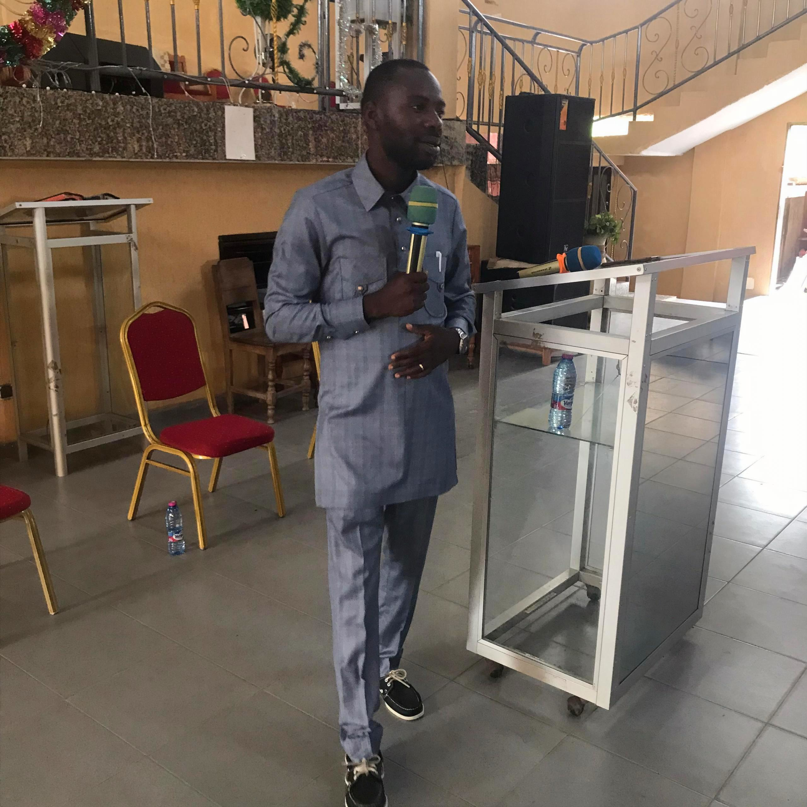

Transformer chaque session en une expérience participative, même en milieu rural : les participants ont des niveaux de scolarité et des parcours différents, ce qui peut rendre leur invitation et la compréhension des sujets plus exigeantes. Le défi consiste à adapter le langage, les exemples et les activités afin que chacun se sente concerné, ose participer et puisse apprendre à son rythme.
Technologies : HTML, CSS, JavaScript.

J'organise des activités de formation, de coaching et d'accompagnement autour du développement de l'identité chrétienne et de la stratégie commerciale. Le défi est de toucher davantage de chrétiens, de répondre à leurs besoins et de leur transmettre des outils concrets pour grandir dans leur foi et leurs projets.
Domaine : Formation, coaching, stratégie commerciale